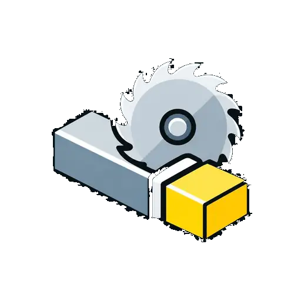

Calcolo Taglio Verghe
Un articolo. Un piano chiaro. La mail pronta.
Come usare e installare l’app
1. Inserisci il codice articolo, la lunghezza in mm e la quantità. 2. Scegli Automatica oppure una verga da 3 o 6 metri. 3. Premi CALCOLA. 4. Controlla il piano e usa COPIA MAIL o APRI EMAIL.
Salva l’articolo per ricordare lunghezza pezzo e verga preferita. Al prossimo ordine richiama il codice e inserisci la nuova quantità. Le preferenze non vengono sovrascritte automaticamente.
Installazione: usa INSTALLA APP quando disponibile. Su iPhone e iPad apri in Safari, poi Condividi → Aggiungi alla schermata Home. Su PC usa la voce Installa del browser compatibile. Se il comando non compare, puoi comunque usare l’app nel browser.
Dopo un primo caricamento completo online, calcolatore e archivio possono funzionare offline. L’invio email richiede il programma di posta e, per l’invio effettivo, la rete. L’archivio è locale a questo browser e indirizzo: non condiviso fra dispositivi. Cancellando i dati del sito puoi perderlo. Esporta un backup.
Il codice dell’app è pubblico, non i tuoi articoli. L’app non invia i dati inseriti a server o strumenti di analisi; il servizio di hosting può registrare normali accessi tecnici. APRI EMAIL passa il testo al programma di posta scelto.
Prepara il taglio
Il tuo piano di taglio, qui.
Inserisci i dati o richiama un articolo salvato.
Piano di taglio
SPEZZONI CHE AVANZANO
Anteprima della mail
Scegli il destinatario nella posta. Verifica che la tua firma aziendale venga inserita correttamente.
Dettagli del calcolo
Capacità: N × lunghezza pezzo + (N − 1) × 2 mm. Se avanza uno spezzone, si considera anche il taglio di separazione. A fine verga esatto non si aggiunge un taglio finale. I casi limite con residuo inferiore a 2 mm richiedono verifica operativa.
Archivio articoli
Info · archivio e backup
Salvi solo codice, lunghezza pezzo, verga preferita e data. Non salvi quantità o mail. Usa richiama la scheda; Modifica permette di correggerla e ricalcolare; Elimina richiede conferma. Esporta un file JSON per backup, Importa lo trasferisce su un altro dispositivo. Le schede del formato attuale con vecchie verghe da 1, 2 o 12 m restano leggibili, ma richiedono ricalcolo usando solo 3 o 6 m. Pezzi oltre 6.000 mm non sono producibili con le verghe attuali.
| Codice | Pezzo | Verga preferita | Aggiornato | Azioni |
|---|
Dati solo locali. Nessuna sincronizzazione. Esporta regolarmente un backup.